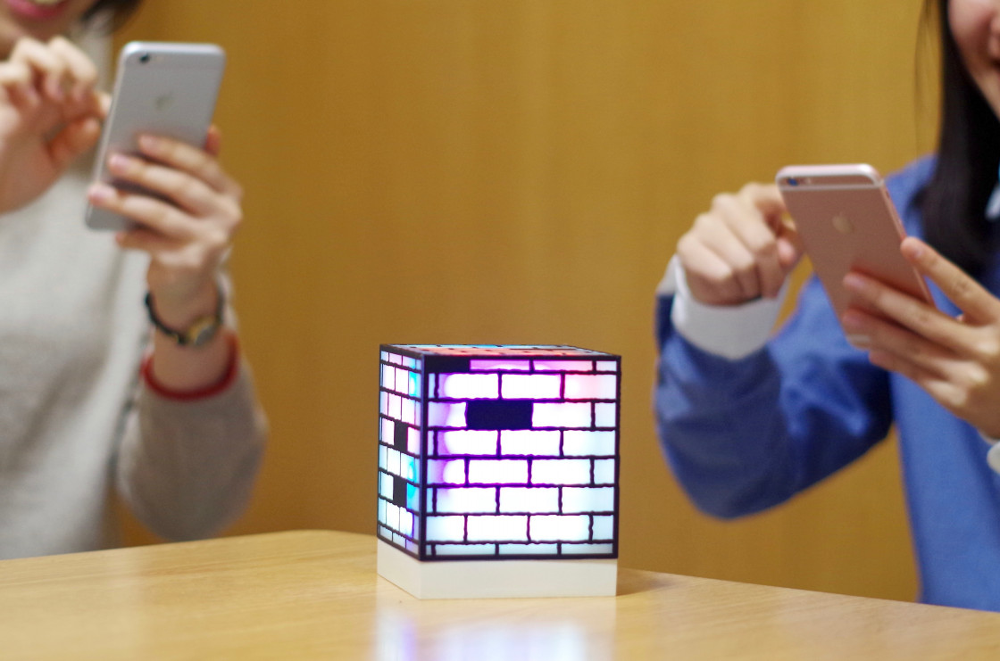

PAINTAR
ペインター
AR が バーチャルを飛び出す新システムの”AR玩具”
PAINTARはARで落書きができる「スマートトイ」
スマートフォン からレンガの模様に向かって
インクを投げると「AR」の世界と連動して
実際の『PAINTAR』本体にも色が付きます。
「AR」の中でインクを当てた位置のレンガが
実際にLED電球によって色が変わります。
リモコンやスイッチで色を操作するのではなく、
もっと直感的に「インクを投げて」色を変える玩具です。
従来のAR（拡張現実）は、あくまで仮想の体験。
マーカーにスマートフォンをかざすことで
「見えるだけ」「あるように感じるだけ」というものでした。
しかし、『PAINTAR』は「AR」で起こったことを
実際に「リアル」で体験できる、
今までにない体験ができるプロダクトです。